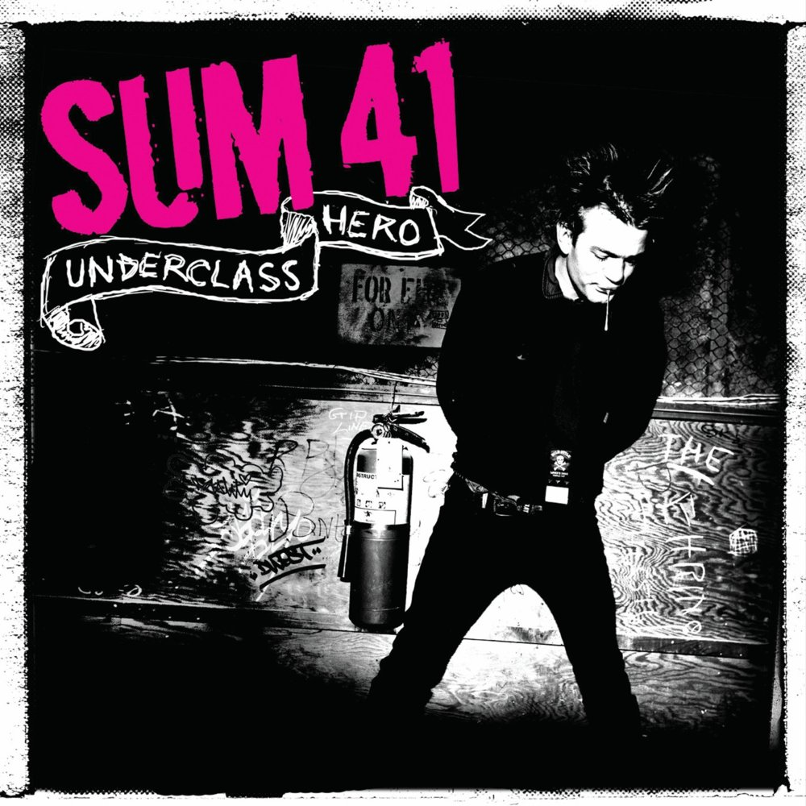
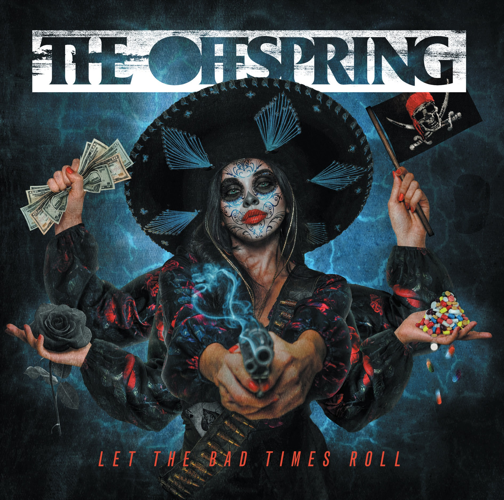
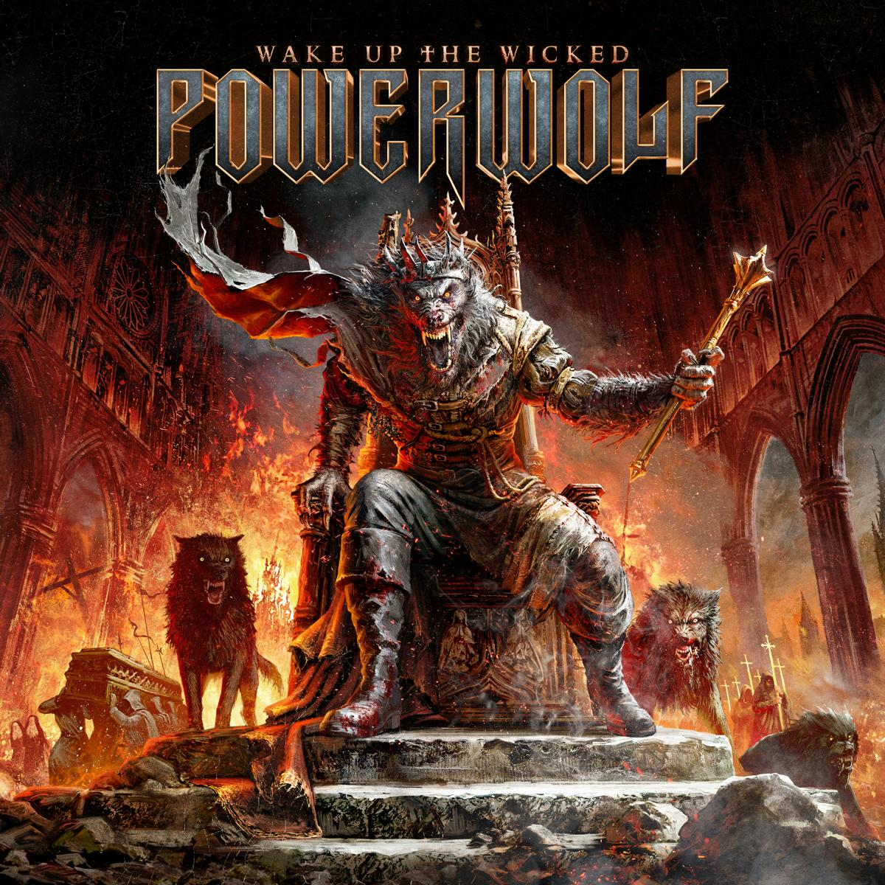

Mis aficiones
Videojuegos
-

Fallout: New Vegas
RPG apocalíptico
-

Satisfactory
Automatización y exploración
-

Like a Dragon
Acción y aventura
-
Me sumerjo en mundos interactivos donde la narrativa y la jugabilidad se entrelazan para crear experiencias inolvidables.
Series
-

Brooklyn 99
Comedia policial
-

Cómo conocí a vuestra madre
Comedia romántica
-

Jojo's Bizarre Adventure
Acción, aventura
-

One Piece
Aventura, fantasía
-
Disfruto de historias apasionantes, ya sean dramas intensos, animación visualmente impactante o comedias que me hacen reír a carcajadas.
Libros
-

Nacidos de la bruma
Fantasía épica
-

The Witcher
Fantasía oscura
-
Me pierdo en las páginas de libros que me transportan a otros universos, desde la ciencia ficción hasta la fantasía épica y la distopía reflexiva.
Películas
-

Regreso al futuro
Ciencia ficción
-

Fast and Furious
Carreras y acción
-

Gran Torino
Drama
-
Las películas que más disfruto mezclan emoción, personajes memorables y mundos que invitan a reflexionar o simplemente entretenerme.
Música
-

Sum 41
Punk rock, pop punk
-

The Offspring
Punk rock, rock alternativo
-

Powerwolf
Power metal, metal sinfónico
-
La música que escucho abarca energía, melodías pegadizas y letras que me inspiran, desde punk y rock hasta metal potente y teatral.